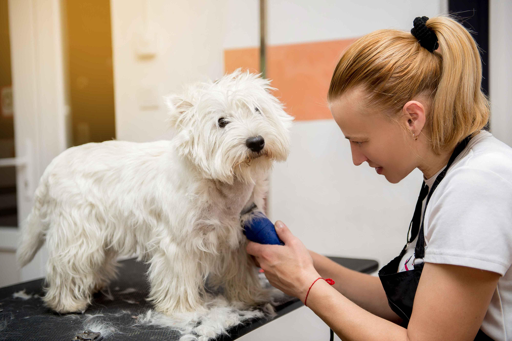
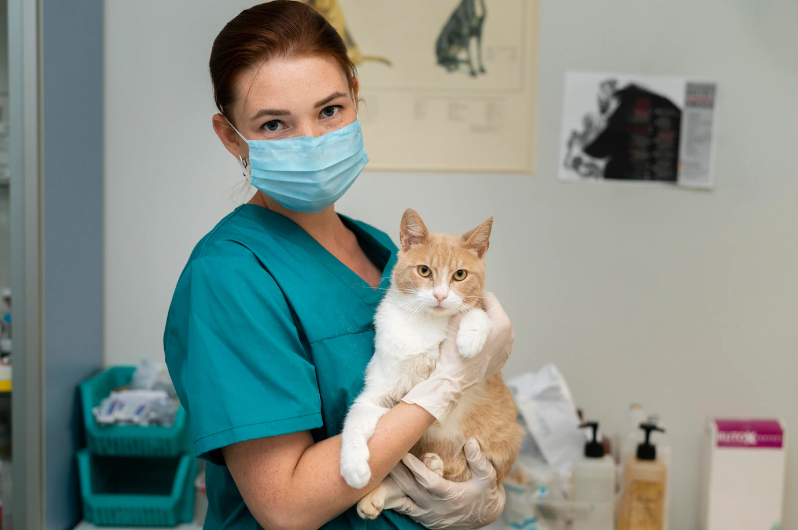

NUESTROS SERVICIOS

Peluqueria Canina
El cuidado del pelo de tu mascota es esencial para mantenerla linda y saludable. En nuestros establecimientos ofrecemos baños, cortes y peinados que combinan estos dos aspectos fundamentales para el bienestar de tu mascota. El servicio incluye baño con shampoo natural, secado, corte a máquina y/o tijera, peinado, limpieza de oídos y corte de uñas. Siempre priorizamos el bienestar de tu mascota, por eso te invitamos a que hables con nuestro profesional de peluquería, para que le menciones tus dudas o consejos sobre los cuidados de tu compañero.

Veterinaria
Nuestros consultorios le ofrecen un servicio médico veterinario integral para pequeños animales. Cuenta para ello con un amplio y cómodo establecimiento, sala de espera grande, amplios consultorios, quirófano totalmente equipado, sala de internación y cuidados intensivos, cálida área de accesorios para sus mascotas y farmacia veterinaria, y fundamentalmente un cuerpo médico, personal asistente y administrativo altamente calificado para la mejor atención y cuidado de sus mascotas, y la tranquilidad de su familia.